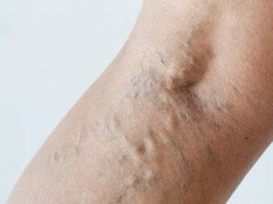

Dr. Juan Cabrera Garrido
Dr. Juan Cabrera
Ver en WikipediaEl Dr. Juan Ramón Cabrera Garrido inventó y patentó en 1993 la nueva forma farmacéutica de MicroespumaⓅ inyectable, la cual se emplea en el tratamiento no quirúrgico de todo tipo de varices, hemorroides, malformaciones venosas (incluyendo las inoperables y las de localizaciones delicadas), úlceras varicosas, varicocele y en cuya patente se basa Varithena®, primera especialidad farmacéutica de origen español aprobada por la FDA y que desde 2014 se comercializa en EEUU y Canadá para la eliminación de grandes varices.
Aunque el término “microespuma” se ha generalizado para referirse (incorrectamente) a cualquier espuma esclerosante, existen grandes diferencias entre éstas y la MicroespumaⓅ original, la cual sólo se aplica en las Clínicas Dr. Juan Cabrera.
Ha supuesto, por primera vez en Medicina, la inyección intravenosa de gases no disueltos en sangre en forma de microburbujas portadoras del agente terapéutico. Así, la Microespuma Original Patentada incorpora CO2 y O2, gases fisiológicos de elevada solubilidad hemática y difusibilidad pulmonar (por su rápido intercambio a nivel alveolar), que elevan su seguridad de empleo. Además utiliza el Lauromacrogol 400 (Polidocanol), esclerosante surfactante muy empleado en forma líquida y con una baja tasa de reacciones alérgicas.
Por el contrario, las restantes espumas “caseras” están formuladas, buscando su estabilidad interna, con aire ambiental. Éste es rico en Nitrógeno, que se asocia al riesgo de embolia gaseosa. De ahí que su uso conlleve limitaciones (en cuanto volumen a inyectar, homogeneidad, cohesividad) y no sean útiles en los múltiples tipos de varices que por tamaño, forma y localización existen, ni en todos los pacientes sin excepción, como sí ocurre con la MicroespumaⓅ.
Estos factores, junto a su mecanismo de producción y la rigurosa técnica de administración (ecoguiada), le proporcionan unas propiedades concretas que redundan en inigualables cotas de eficacia y seguridad. De esta forma, hoy día, la MicroespumaⓅ continúa sin poder ser emulada y con ella se ha tratado con éxito, durante 3 décadas, a más de 50.000 pacientes de todo el mundo.
Formamos parte de un grupo de empresas destinadas al estudio y tratamiento de enfermedades venosas mediante microespuma, y ponemos a través de Clínicas las últimas tecnologías y más avanzadas innovaciones al servicio de nuestros pacientes.
Teléfono Clínica en Barcelona: 932 05 66 14 Teléfono Clínica en Granada: 958 25 03 00 Teléfono Clínica en La Coruña: 981 17 54 57Teléfono: 902 15 15 92
Escleroterapia con microespuma. Eliminación de las varices y hemorroides sin cirugía
Microespuma
¿Qué es?La Eco-escleroterapia con Microespuma℗ es un procedimiento terapéutico indicado para el tratamiento de todo tipo de varices y malformaciones del sistema venoso.
Consiste en inyectar en las venas varicosas una novedosa forma farmacéutica constituida con gases fisiológicos de elevada solubilidad en la sangre y una sustancia esclerosante (Polidocanol). El Polidocanol depositado sobre las microburbujas irrita el interior de las venas tratadas y provoca una reacción inflamatoria pasajera que conduce a su fibrosis y a su posterior reabsorción definitiva.
La eliminación de la vena varicosa hace que la circulación mejore ya que, al ser venas enfermas, no son funcionales y el organismo no las necesita.
El procedimiento es apto para cualquier tipo de variz, independientemente de su tamaño y morfología, no requiere ningún tipo de cirugía ni baja laboral, es totalmente ambulatorio y el paciente puede volver a su vida normal.
Microespuma
¿Cómo surge?En 1993 el Dr. Juan Cabrera Garrido, Cirujano Vascular y su hijo Juan Cabrera Garcia-Olmedo, farmacéutico, patentan la nueva forma farmacéutica de “Microespuma inyectable conteniendo un agente esclerosante”, posteriormente se efectúan extensiones de esta patente a Europa y EEUU. La Multinacional británica BTGplc adquiere los derechos de estas patentes, crea el Laboratorio Farmacéutico Provensis y le encarga el desarrollo del concepto. Este laboratorio realiza con la microespuma industrial de grado farmacéutico (Varithena®), ensayos clínicos a niveles reglamentarios, que culminan con los multicéntricos en Fase III, llevados a cabo con éxito en diferentes Estados Europeos.
Seguidamente inicia ensayos en Fase II en EEUU que terminaron con éxito en 2010. Tras las posteriores Fases III y IV, el proceso finalizó en 2014 con la salida al mercado estadounidense del fármaco Varithena®. La influencia de este laboratorio y de su firma matriz en el desarrollo de la Microespuma℗ ha sido crucial, aportando una inversión de 400 millones de euros y generando sustanciales avances en el conocimiento del mecanismo de acción y sobre administración segura de gases no disueltos en sangre.
Microespuma
¿Cuál es la novedad que aporta?- 1) Permite eliminar todas las varices y/o hemorroides en todos los pacientes, con la misma técnica, sin limitaciones debidas a número, tamaño, localización o morfología.
- 2) Hace posible el tratamiento de malformaciones venosas inoperables, carentes hasta el momento de alternativa terapéutica.
- 3) Alta acción terapéutica que permite disminuir considerablemente la dosis administrada
- 4) El procedimiento es apto para cualquier tipo de variz
- 5) No requiere ningún tipo de cirugía
- 6) No requiere baja laboral
- 7) Es totalmente ambulatorio
- 8) El paciente puede volver inmediatamente a su vida normal
Opiniones
Paciente: A.L.C.
Oviedo (Asturias)Llegué a esta clínica por recomendación de una doctora en mi ciudad después
de haber sido intervenida en tres ocasiones en la misma pierna. Las dos
primeras salieron bien, pero la última fue un verdadero desastre con un
empeoramiento considerable.
Mi caso era realmente complicado y estaba bastante desesperanzada, pero en
cuestión de pocos meses pude trasmitirle mi agradecimiento por este gran
acierto a la doctora.
La experiencia resultó muy satisfactoria, me trataron las dos piernas con unos
resultados muy por encima de mis expectativas, desaparecieron los dolores y
las varices sin marcas ni cicatrices, haciendo prácticamente vida normal. Hace
más de un año que finalicé el tratamiento.
El trato en la clínica es muy profesional y agradable.
La recomiendo sin duda a cualquier persona que esté pensando en tratar estos
problemas de varices, en mi opinión no pueden estar en mejores manos. Una
pena no haberles conocido antes.
Paciente: I.S.
LugoTras 30 AÑOS padeciendo de varices hereditarias y agravadas por mi profesión
(que me obliga a estar largas jornadas de pie), y sometida a cuatro
operaciones, comencé mi tratamiento en la clínica Dr Cabrera de A Coruña.
Ocho años después del tratamiento, solo puedo decir que los resultados han
sido inmejorables, tanto en salud y estética como en autoestima. Tanto es así,
que nunca he dejado de recomendar la clínica a familia, amigos y clientes.
Decenas de ellos han acudido tras conocer mi experiencia y están gratamente
satisfechos.
Estoy muy agradecida a la Dra Teresa Pintos y a su enfermera Virginia por su
excelente trato y profesionalidad.
Paciente: J.G.G.
GranadaHoy he vuelto a una sesión en la clinica de granada.
Estoy muy muy contento, no se puede expresar. La doctora me ha enseñado en el
ordenador las fotos que hicieron a mis piernas el primer día antes de empezar, y la
verdad q hay un cambio 100% visible, vengo con la moral por las nubes.
Desde aqui quiero felicitar a las clínicas del doctor juan cabrera y en especial a la
cliníca de Granada, al doctor Antonio, y las doctoras Martin y Garrido, a las
enfermeras Pepa, Angela y Mercedes y mas personas q trabajan alli q siento no
saber sus nombres.
Gracias de corazon por devolverme la vida, por vuestra atencion y dedicacion y
por este año de avance y mejora continua. Si no hubierais aparecido en mi vida,
seguramente hoy, quizas, estaria hablando de la amputacion de mis piernas, q
fueron palabras textuales de los médicos de la seguridad social q se negaron a
tratarme y operarme.
Gracias y mil veces gracias, os debo mi vida.
Resultados con microespuma
Imágenes de casos reales de varices, úlceras venosas y malformaciones vasculares antes y después de ser tratadas con microespuma esclerosante en los centros vinculados a Clínicas Dr. Juan Cabrera.{kind=link}
{kind=link}
{kind=link}
RECUPERA LA SALUD DE TUS PIERNAS
30 AÑOS dedicados al estudio y tratamiento de las enfermedades venosas.
{kind=link}

Varices
TratamientosEliminamos con nuestro tratamiento de microespuma cualquier tipo de variz: Dilataciones capilares o arañas vasculares, Varices reticulares y Varices tronculares.
ver más{kind=link}
Clínicas
Barcelona, Madrid, Granada y La CoruñaEl personal de Clínicas Dr. Juan Cabrera está compuesto por un equipo multidisciplinar.
Tipos de varices
Las varices son signos de una enfermedad denominada Insuficiencia venosa crónica.
Las varices son la insuficiencia venosa más común. Estas se producen por una alteración en el flujo venoso producto de un mal funcionamiento congénito en el sistema de válvulas y músculos de la región gemelar. Son de origen genético.
Varices
Varices tronculares esenciales o primarias:
Se forman a partir de los ejes venosos superficiales safeno interno y externo. Estas venas y otras a ellas conectadas se dilatan y toman forma prominente, arrosariada y tortuosa. Suelen ser visibles por el incremento de tamaño que experimentan cuando se está de pie. Pueden presentar complicaciones como varicotrombosis y la aumentada presión de la sangre en su interior, favorece con el tiempo la aparición de trastornos en la piel (fibrosis, cambios de coloración y ulceras).
Varices tronculares recidivadas:
Son venas dilatadas que aparecen en múltiples localizaciones tras haberse realizado una intervención de varices. En ocasiones aparecen precozmente tras la cirugía y su eliminación mediante una nueva intervención es más difícil.
Varices postflebíticas:
Son varices tronculares debidas a la avalvulacion de los ejes venosos superficiales tras un episodio de trombosis venosa que ha provocado destrucción valvular en las venas profundas. Su aparición provoca hipertensión venosa en la piel en grado superior al inducido por las varices esenciales o primarias. Tradicionalmente se ha considerado que no deben ser tratadas, pero su eliminación puede mejorar el grado de reflujo en las venas profundas con mejoría de la hipertensión venosa de la piel y por tanto disminución de sus complicaciones.
Malformaciones vasculares
Las malformaciones vasculares son lesiones benignas presentes siempre desde el nacimiento, pero a veces no son visibles hasta semanas o meses después. Persisten para siempre y van creciendo a lo largo de la vida, a veces rápidamente en relación con traumatismos, con procesos infecciosos, cambios hormonales, etc. Su incidencia aproximada es del 1%.
Úlceras varicosas
Las úlceras varicosas son una de las grandes complicaciones de las varices cuando no son tratadas debidamente y a su tiempo. Se producen por una hipertensión distal de una vena varicosa debido a que hay una ralentización de la sangre venosa en su retorno por pérdida de carga, y se produce un cierre de las anastomosis arteriovenosas entre vénulas y arteriolas.
HEMORROIDES
La patología hemorroidal (hemorroides) es sin duda una dolencia muy frecuente y la primera causa de sangrado anal. Se estima que más del 50% de la población presenta en algún momento de su vida algún síntoma asociado a patología hemorroidal.
Productos Y Servicios
Si quieres conocer nuestra gama de productos más detalladamente y de manera cómoda aquí puedes ver todos nuestros productos
ver másContacta
¿Alguna duda acerca de nuestros productos o servicios? Aquí tienes todas las formas de contactar con nosotros
ver masTe Llamamos Gratis
Si tienes alguna pregunta sobre nuestros productos o servicios o necesitas consejos sobre algo relacionado con nuestro negocio, por favor déjanos un teléfono fijo o número de teléfono móvil y te llamamos gratis.
ver masNoticias
La Agencia de Alimentos y Medicamentos estadounidense (la Food and Drug Administration o FDA) ha aprobado el primer inyectable indicado para enfermedades venosas como las varices y hemorroides patentado en España. Se trata de un fármaco que erradica la variz de forma eficaz y elude la cirugía, que es...
Ver más
La Administración de Alimentos y Medicamentos de Estados Unidos ha aprobado una nueva forma farmacéutica para el tratamiento de las enfermedades venosas que ha sido desarrollada por investigadores del Instituto Internacional de Flebología del Parque Tecnológico de la Salud...
Ver más